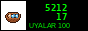

игра сама запоминает, где ты остановился (в этом браузере). закрыл вкладку, открыл, продолжаешь. ЗАНОВО начинает сначала. ничего никуда не отправляется. на телефоне можно нажимать кнопки, но печатать интереснее.
